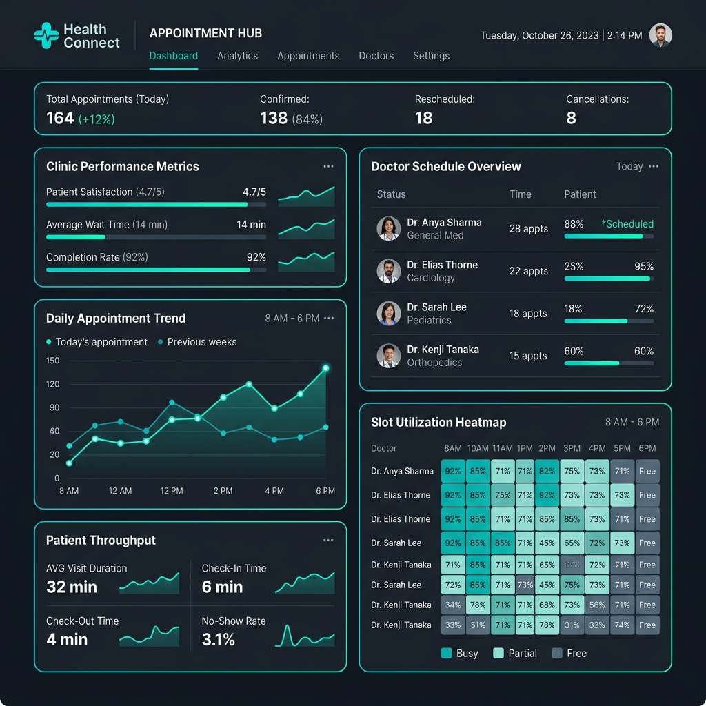

Healthcare Analytics
Health Connect Appointment Hub
Problem
High appointment cancellation rates and clinic bottlenecking due to fragmented scheduling data.
Approach
Engineered relational schema in PostgreSQL, built FastAPI slot booking services, and designed a Power BI executive tracking dashboard.
Key Result
45% latency reduction in booking processing and 30% boost in clinic slot utilization.
Python
FastAPI
PostgreSQL
Power BI
JavaScript
